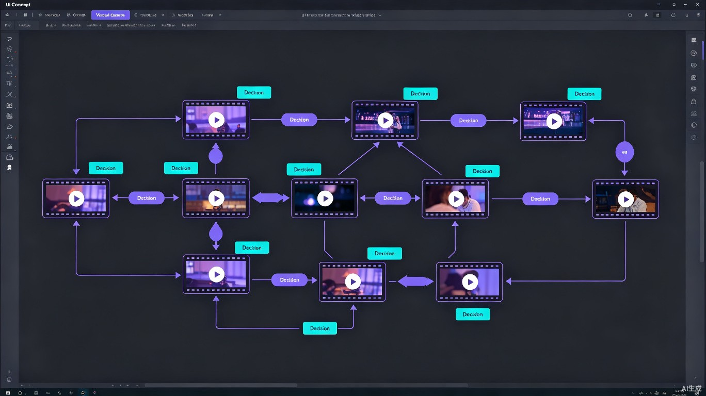
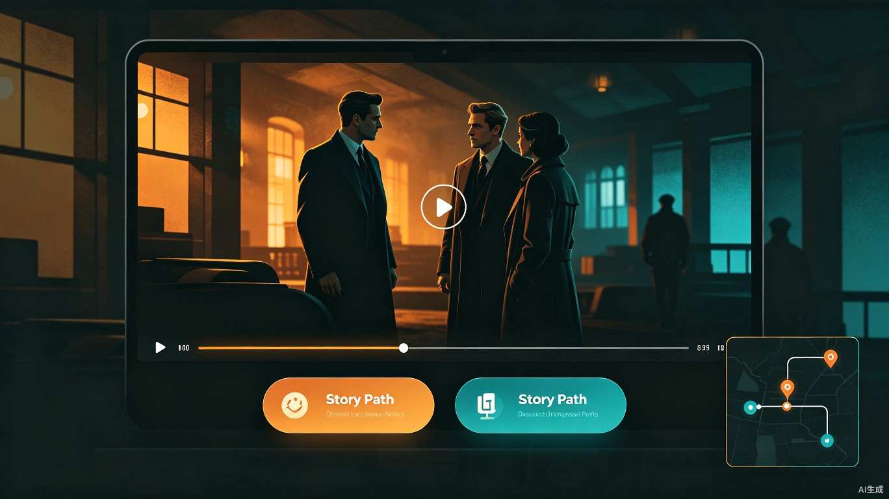

01产品概述
用一段话讲清楚：我们做什么、为谁做、为什么值得做
StoryFlow 是一个Web3 开放生态下的互动影游创作、发布与分享平台。创作者通过画布式可视化编辑器上传视频片段、编排分支剧情流程、配置互动按钮，最终生成沉浸式的互动影视作品，观众在播放中做出选择，真正「玩」一部电影。
产品愿景
传统影视内容是线性单向传播，观众只能被动接受。而互动影游将「观看」升级为「参与」，每个选择都影响剧情走向，带来全新的叙事体验。StoryFlow 的愿景是：降低互动影游的创作门槛，让每个人都能成为互动叙事导演，并通过 Web3 理念实现作品的去中心化发布、版权保护与创作者经济闭环。
核心价值主张
无需编程即可创建复杂分支
10 类 x 10 种个性化按钮
创作、发布、分享全链路
02目标用户与使用场景
谁是我们的用户？他们在什么场景下需要 StoryFlow？
UGC 短视频创作者
希望突破传统短视频线性叙事限制，通过分支剧情增加内容趣味性和用户停留时长，提升粉丝互动参与度。
独立影视团队
低成本制作互动短剧、互动广告、互动宣传片，通过分支叙事让观众参与剧情走向，提升传播力和商业价值。
游戏化内容创作者
将真人影视与游戏化选择机制结合，创作「可视小说」式互动影游，满足 Z 世代对沉浸式、参与式内容的需求。
教育培训机构
制作互动教学视频，学员在关键节点做出决策选择，通过不同分支体验不同后果，实现情景式教学与培训演练。
典型使用场景
- 互动短剧创作：创作者拍摄多版本结局片段，上传后通过画布编排 3-5 条分支路线，观众选择角色行动后跳转不同剧情线
- 品牌互动广告：品牌方制作产品体验视频，在不同使用场景节点设置选择按钮，让观众探索产品不同功能卖点
- 沉浸式叙事体验：悬疑/恐怖类创作者设置正向推进+反向回跳机制，观众可以反复探索不同选择带来的不同结局
- 教育培训模拟：企业培训中模拟真实场景，学员在关键决策点选择不同应对方案，体验不同后果并学习正确做法
03核心功能模块
四大核心模块构成完整的产品闭环
模块一：画布式可视化编辑器
StoryFlow 的核心编辑界面是一个无限画布（类似 Miro/Figma），创作者可以在画布上自由拖拽、排列视频节点，用连线表示剧情流向，构建出完整的分支叙事结构。

画布编辑核心能力
- 视频节点管理：每个视频片段作为一个「节点」放置在画布上，支持拖拽移动、缩放预览、重命名、设置缩略图封面
- 流程连线绘制：通过拖拽节点间的连接点创建有向边，箭头方向表示剧情推进方向，支持直线、折线、贝塞尔曲线三种连线样式
- 分支按钮设置：在任意视频节点的指定时间点添加分支按钮，设置按钮文案、目标跳转节点、触发时间码
- 按钮风格系统：提供 10 大类 x 10 种 = 100 种按钮风格预设，支持全局统一设置和单按钮个性化覆盖，风格类别涵盖：简约、霓虹、复古、科幻、手绘、卡通风、暗黑、金属感、玻璃拟态、赛博朋克
- 画布操作工具栏：支持框选、群组、对齐、自动布局、缩放平移、小地图导航、撤销/重做、网格吸附
- 预览与校验：一键进入预览模式，可快速播放验证分支逻辑是否正确，自动检测死路径和未连接节点
模块二：沉浸式互动播放器
StoryFlow 播放器不是简单的视频播放器，而是一个剧情引擎。它按照画布编辑器中定义的流程图执行播放逻辑，在到达分支节点时暂停并展示选择按钮。

播放器核心能力
- 分支选择交互：视频播放到预设的分支时间点时自动暂停，展示 2-4 个选择按钮，观众点击后无缝跳转至对应节点继续播放
- 正向 + 反向跳转：支持正向推进剧情，也支持在分支结束后「回跳」到之前的分支节点重新选择（全局可配置开关）
- 流程小地图：播放器右上角始终显示缩略流程图，实时标注当前位置，用户可点击小地图节点直接跳转
- 画布自由跳转模式：播放过程中用户可一键展开完整画布视图，自由点击任意节点跳转播放，实现「自由探索」体验
- 进度记忆：自动保存观众的选择路径和播放进度，下次打开可继续体验，或从历史选择点重新开始
- 全屏沉浸模式：支持全屏播放，按钮以半透明浮层形式覆盖在视频上，打造影院级沉浸体验
这是 StoryFlow 的差异化创新。当观众到达某个分支线的「结局」后，系统会提示是否回到之前的分支节点重新选择其他路线，还是继续解锁后续新剧情。创作者可通过全局开关控制此功能是否启用，灵活性极高。这种机制极大提升了作品的可重复游玩性和探索价值。
模块三：作品管理与发布
- 草稿与版本管理：支持多版本草稿保存、版本对比、历史回退，创作者可随时切换到之前任意版本继续编辑
- 一键发布：编辑完成后一键生成可分享的互动影游链接，支持嵌入网页、社交媒体分享、独立页面播放三种分发方式
- 播放数据分析：查看作品的播放量、完播率、各分支选择比例、观众停留时长等数据，帮助创作者优化叙事设计
- 访问权限控制：支持公开、密码保护、指定用户可见三种访问模式
模块四：社区与创作者生态
- 作品广场：展示平台上的优质互动影游作品，按热度、最新、分类标签进行浏览，支持评论与评分
- 模板市场：创作者可以将自己的画布流程结构保存为模板，其他用户可以复用模板替换视频内容快速创作
- 协作编辑：支持多人实时协作编辑同一个项目，类似 Figma 的多人协作体验，适合团队创作
- 创作者激励：基于 Web3 理念的创作者激励机制，优质作品可获得平台曝光推荐和收益分成
04核心交互流程
从创作到体验的完整用户旅程
创作者工作流
观众体验流
05技术方案概览
技术架构选型与实现思路
技术架构选型
| 层 | 技术选型 | 说明 |
|---|---|---|
| 前端框架 | React + TypeScript | 画布编辑器基于 React Flow / Konva.js 实现无限画布与节点编排 |
| 视频播放 | Video.js + HLS.js | 支持 HLS 流媒体协议，实现无缝分支跳转与精准时间码定位 |
| 画布引擎 | React Flow + Custom Nodes | 可定制节点组件、连线样式、拖拽交互、小地图、自动布局算法 |
| 后端服务 | Node.js + Express / Go | RESTful API 提供作品管理、用户系统、数据统计等服务 |
| 数据存储 | PostgreSQL + Redis + S3 | 关系型数据库存储作品元数据，Redis 缓存热点数据，S3 存储视频素材 |
| 流程引擎 | 自研有向图引擎 | 基于有向图数据结构管理分支逻辑，支持正向/反向遍历、路径校验、死链检测 |
| 部署方案 | Docker + CDN | 容器化部署，CDN 加速视频分发，保障播放流畅度 |
核心技术难点
无缝分支跳转
视频从 A 节点跳转到 B 节点时如何消除加载延迟？采用 HLS 分片预加载 + 双缓冲区策略，在观众阅读选择按钮时提前缓冲目标节点视频。
有向图流程引擎
如何高效管理复杂的分支网络？自研基于邻接表的有向图引擎，支持 DFS/BFS 遍历、拓扑排序、环检测、路径规划等核心算法。
反向回跳机制
如何在播放时支持回到之前分支节点？维护播放路径栈，支持 pop 回退到任意历史节点，同时正确处理视频状态重置。
大规模画布性能
当节点数超过数百个时画布如何保持流畅？采用虚拟化渲染 + LOD 机制，只渲染视口内可见节点，远处节点降级为简化图标。
技术标签
06竞品分析与差异化
与现有解决方案的对比
| 维度 | StoryFlow（本方案） | Eko Studio | YouTube 热门故事 | 传统视频剪辑工具 |
|---|---|---|---|---|
| 编辑方式 | 画布式可视化编排 | 时间线式 | 链接跳转式 | 线性时间线 |
| 分支复杂度 | 任意复杂有向图 | 有限分支树 | 简单二选一 | 不支持分支 |
| 反向跳转 | 支持（全局开关） | 不支持 | 不支持 | 不支持 |
| 按钮风格 | 10类x10种 = 100种 | 少量模板 | 固定样式 | 无 |
| 画布自由跳转 | 支持 | 不支持 | 不支持 | 无 |
| Web3 生态 | 支持（去中心化发布） | 中心化平台 | 中心化平台 | 无社交属性 |
| 创作门槛 | 低（拖拽式） | 中等 | 低（但功能有限） | 中等（无互动功能） |
1. 画布式分支编排 — 用可视化的流程图替代传统时间线，直观展现复杂分支网络，大幅降低创作门槛
2. 正向+反向跳转机制 — 独创的剧情回跳系统，让观众可以反复探索不同选择，极大提升作品可重复游玩性
3. 播放中画布自由跳转 — 打破线性叙事枷锁，观众可以在播放过程中自由切换到任意分支节点，实现真正的「开放式探索」
07商业模式与盈利路径
可持续的创作者经济模型
免费基础版
支持最多 5 个视频节点、3 条分支线，基础按钮风格，公开分享。面向个人体验者和轻度创作者。
Pro 创作者版（订阅制）
不限节点数和分支复杂度，全部 100 种按钮风格，高清导出，数据分析面板，优先处理队列。月费 29-49 元。
团队协作版
多人实时协作编辑、版本管理、品牌定制、API 接口。面向影视团队和企业客户，年费制。
平台分成
作品广场中优质付费内容平台抽成 15%，创作者获得 85% 收益。通过 Web3 钱包直接结算，透明可追溯。
08发展规划与里程碑
从 MVP 到完整生态的分阶段路径
| 阶段 | 时间 | 目标 | 核心交付 |
|---|---|---|---|
| MVP | 第 1-2 月 | 验证核心价值 | 画布编辑器（基础版）+ 播放器（正向播放+分支选择）+ 作品发布 |
| V1.0 | 第 3-4 月 | 完善核心功能 | 100 种按钮风格、反向跳转、画布自由跳转、数据分析、作品广场 |
| V2.0 | 第 5-7 月 | 生态建设 | 多人协作、模板市场、Web3 钱通集成、付费内容体系 |
| V3.0 | 第 8-12 月 | 规模化运营 | AI 辅助创作（自动推荐分支节点、生成按钮文案）、API 开放平台、品牌合作方案 |
09总结
为什么 StoryFlow 值得被创造
StoryFlow 解决了互动影游创作中的三个核心痛点：创作门槛高（通过画布式可视化编辑降低）、交互方式单一（通过正向+反向跳转和画布自由跳转丰富体验）、缺乏创作生态（通过 Web3 开放平台和社区建设形成闭环）。这不仅是一个工具产品，更是一个互动叙事的内容生态，让每个人都能成为自己故事世界中的导演。
在 TRAE AI 创造力大赛的「生活娱乐」赛道中，StoryFlow 精准切入了互动内容创作这一快速增长的市场需求。它融合了影视叙事、游戏化交互和 Web3 去中心化理念，为用户带来全新的内容消费体验，为创作者提供全新的表达工具。我们相信，互动影游是视频内容的下一个演进方向，而 StoryFlow 将成为推动这一变革的基础设施。